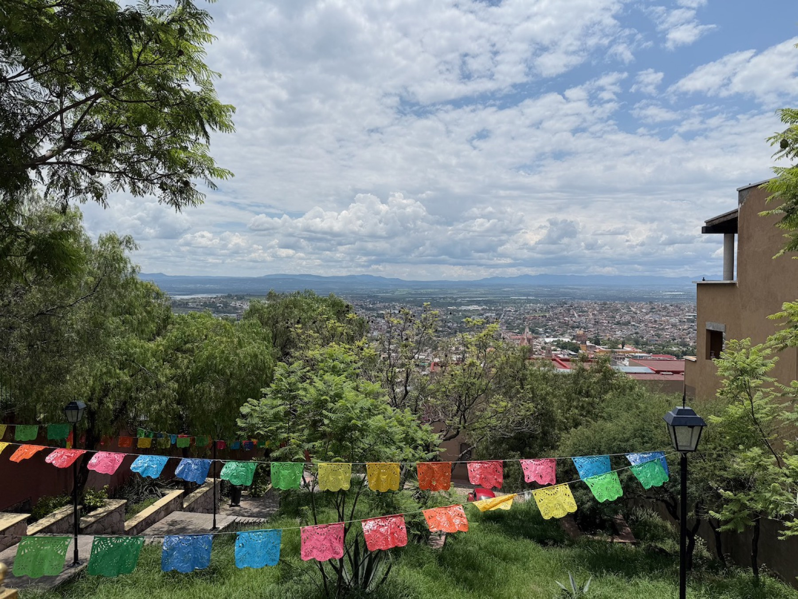
There's a particular kind of relief that hits when you step off a plane in June and the air is cool. Not air-conditioned-cool — actually, honestly cool, the way a Georgia spring used to feel before the heat arrived. That was the first gift San Miguel de Allende gave us: a picturesque colonial city sitting up in the Mexican highlands, where the elevation keeps things spring-like while Austin bakes at 100 degrees. We escaped, and I'm still not over it.
A little history before we get to the good stuff
San Miguel isn't just pretty — it's a UNESCO World Heritage Site, and it earned it. The town was founded back in 1542 by a Spanish friar named Juan de San Miguel, originally as a fortified stop along the royal silver route that ran through the interior of the country. It later took on the name of Ignacio Allende, a hometown hero of Mexico's War of Independence who was born in a house facing the central plaza.
The city hit its stride in the 1700s, which is why the whole historic center feels like a beautifully preserved Baroque time capsule. The showstopper is La Parroquia de San Miguel Arcángel, that pink, fairy-tale, neo-Gothic church you've probably seen on a postcard. Fun detail I loved: its famous spires were designed in 1880 by a self-taught local stonemason who'd only ever seen European cathedrals on postcards himself and worked from those. So the most iconic thing in town is essentially one man's inspired improvisation. I find that delightful.
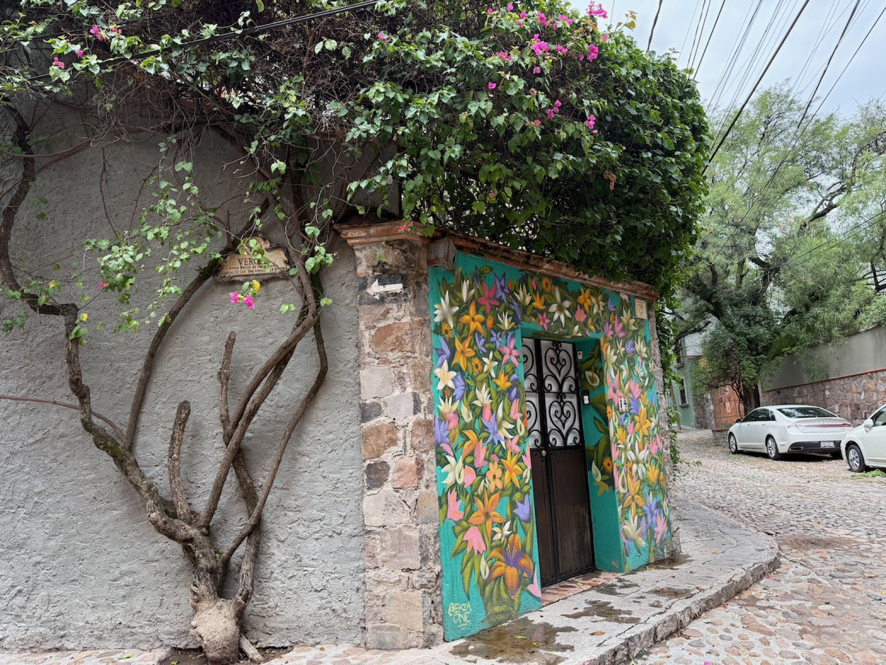
Why we went (and getting there)
This trip started, as the best ones do, with a friend. Back in January, my neighbor reached out about a camp she thought I'd love — offered through the International World School of Mexico — and I was instantly intrigued. Having traveled and even lived abroad with my first two kids, I'm always looking for ways to shake things up for my third, whose childhood has been so much quieter and more settled. When a chance comes along to give him a little disruption, the good kind, I grab it.
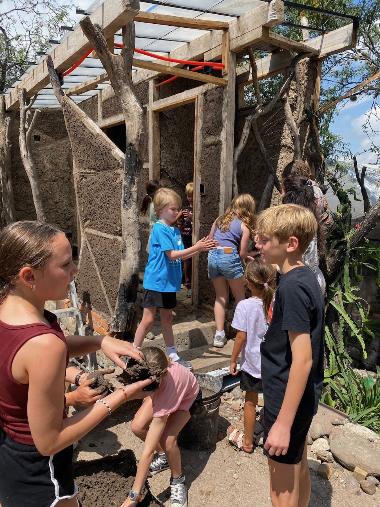
Getting there sounds like more steps than it was. We drove to San Antonio, caught a direct flight into León (BJX), and were met by a BajíoGo shuttle for the roughly 1.5-hour drive into town. On paper it reads like a lot. In reality it was seamless, and so worth it.
Airport tip: León isn't your only option. You can also fly into Querétaro (QRO), which is a bit closer — about an hour to an hour and fifteen from San Miguel, much of it on a fast toll road. Worth comparing flights and prices for both before you book.
Home base
We stayed in a classic San Miguel B&B — one of those homes built around an interior courtyard with a rooftop terrace up top. We spent every possible minute on that roof, and I claimed it as my home office for the week. There are worse places to answer email than under an open sky with the cathedral domes in the distance.
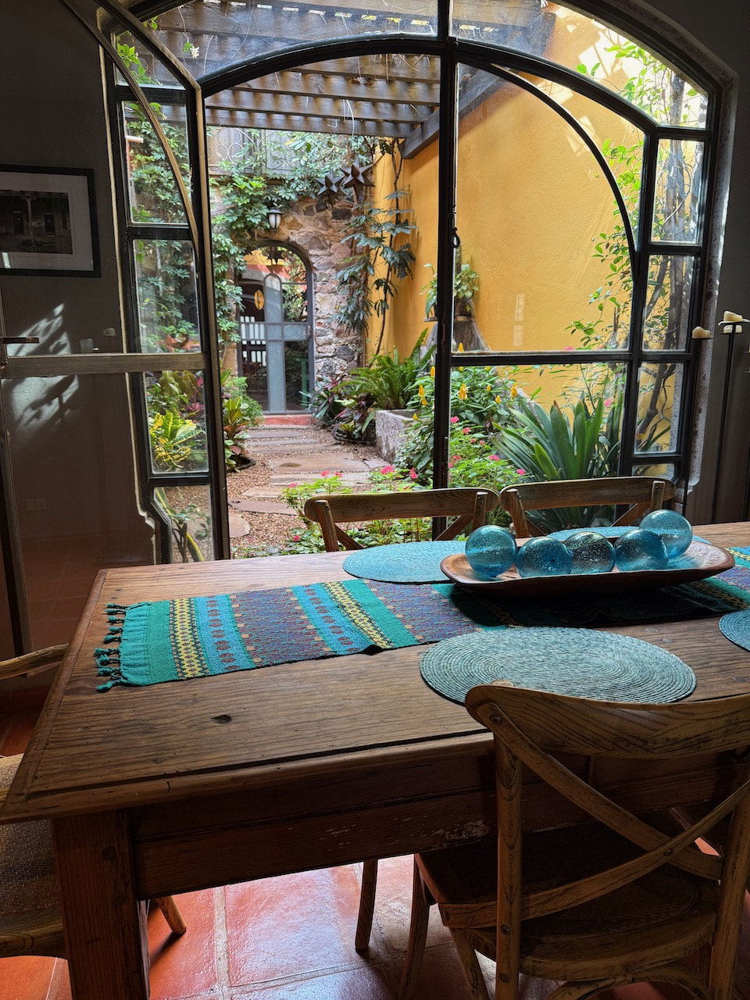
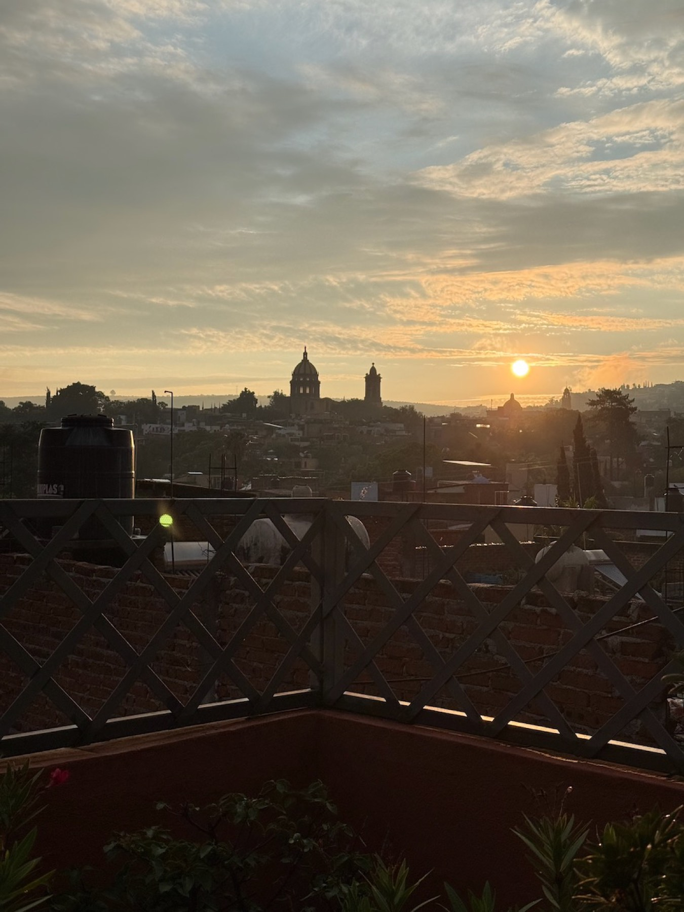
While our son was at camp (a short Uber away), my husband and I explored the city the best way you can: on foot.
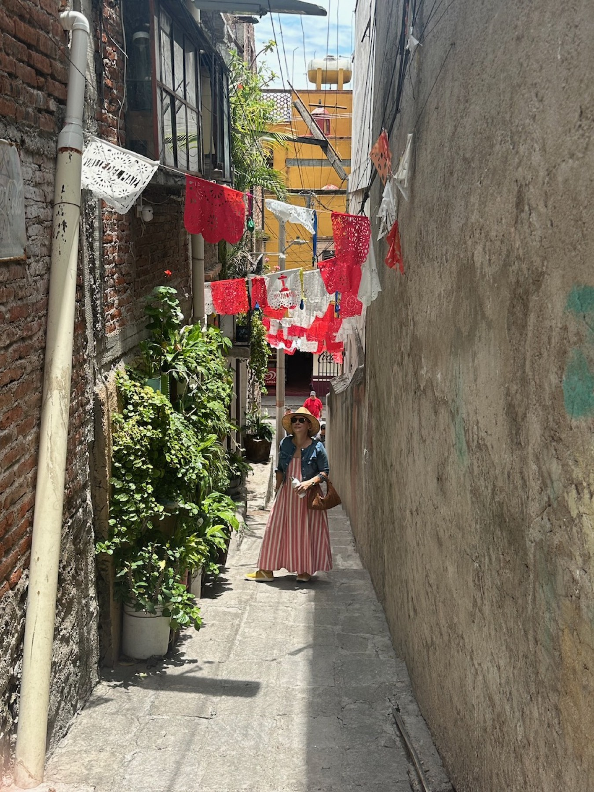
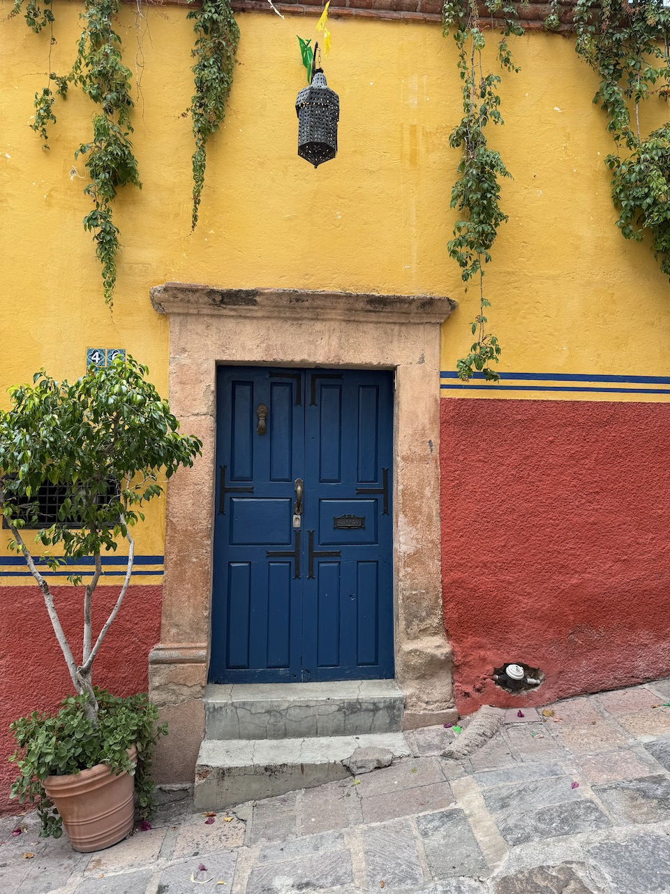
A city made for wandering
More than any single activity, San Miguel is a city to explore. Some of our favorite moments were the unplanned ones — just walking around, turning down a side street, and taking it all in. And Centro at night is a fun time all its own: the mariachi bands take their turns entertaining beneath the cathedral, one after another. Such a lively scene.
Excursions Just Outside Town
Ziplining at Parque de Aventura San Miguel. I'll be honest — I almost turned around at the very first line. My brave 11-year-old was having none of my hesitation and pushed me through it (I may have gone tandem with the guide on that first turn, but I went). A good reminder that sometimes your kid is braver than you, and that's exactly the point.
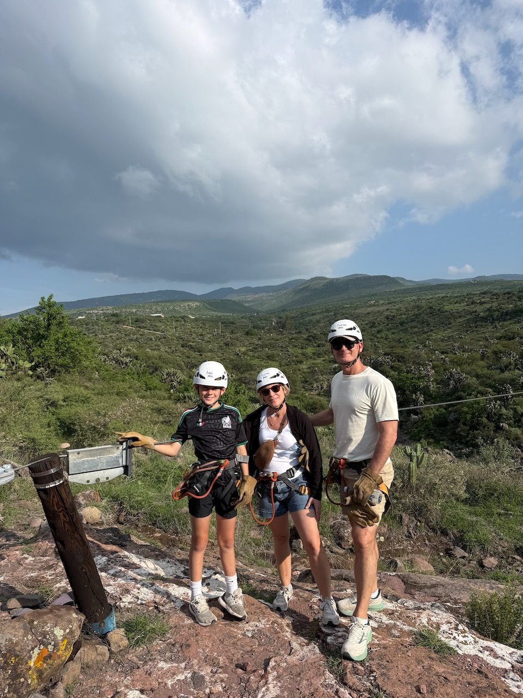
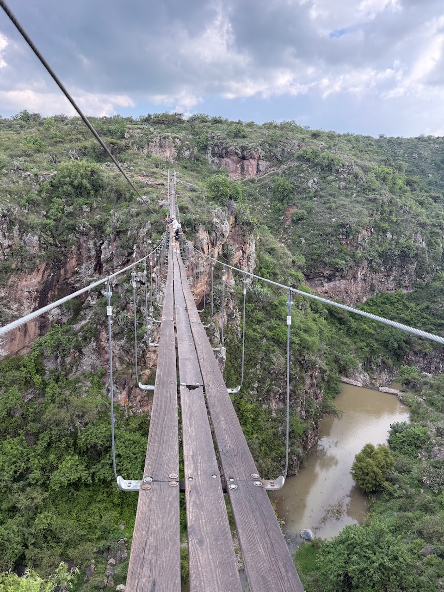
Bodega Dos Búhos. This winery on the edge of town was a highlight. We had a fantastic lunch — salmon and couscous — and tasted the rosé and the Sauvignon Blanc. Chatting with the manager, we learned it's family-owned and the owner splits his time between San Antonio and San Miguel, which felt like a fitting little Texas-to-Mexico thread running through our whole trip.
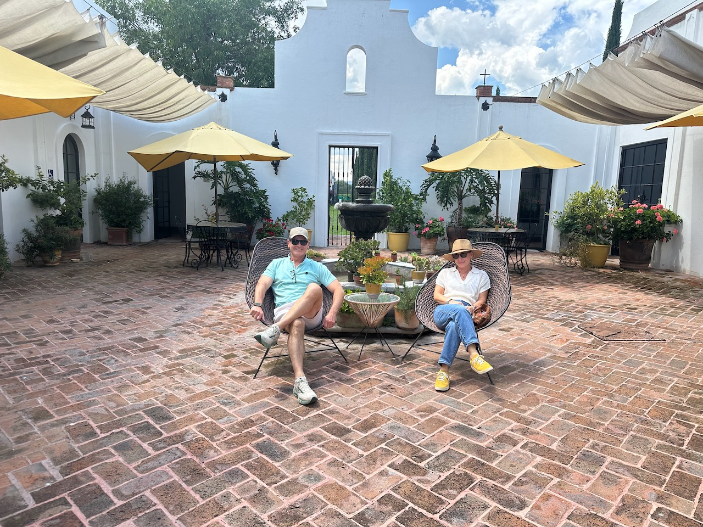
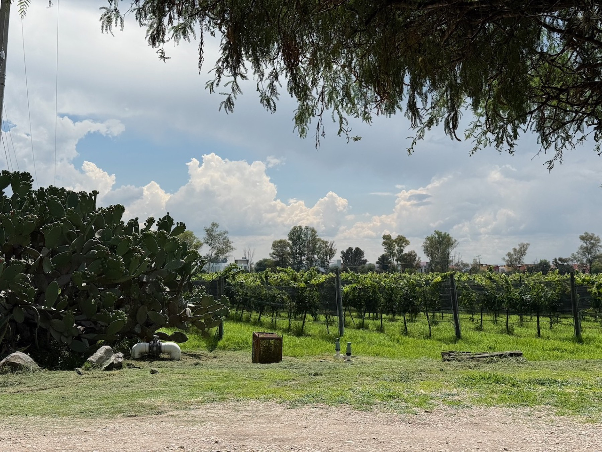
Logistics note: Uber will happily take you out to Dos Búhos, but you'll need to arrange a taxi to get back into town. Plan ahead so you're not stranded (pleasantly) among the vines.
Getting around
Speaking of Ubers — they're cheap, plentiful, and easy in San Miguel. We never worried about a ride the whole week.
When to go
We hit it during low season, the week of June 21, and I'd do it again in a heartbeat. It's technically the rainy season, but it only rained one day — and by "rained" I mean it poured, dramatically, and then moved on.
A local tip we were given: avoid December and January, and steer clear of late June onward, when Mexican kids are out for summer break and many families head to their second homes in San Miguel. Someone described it to me as the Hamptons of Mexico, minus the beaches — which tells you everything about both the charm and the crowds.
The art scene (it's fabulous)
San Miguel's art scene lives up to the hype.
Parque Benito Juárez. On Sundays, local artists set up in this shady, lovely, spotless park. On weekends there's a lively neighborhood basketball scene too. It's the kind of public space I could sit in for hours.
Fábrica La Aurora. A former textile factory turned into a labyrinth of galleries, with a few restaurants tucked in. Go for the art — it's incredible. I wouldn't necessarily go for the food.
Where we ate
San Miguel is full of gorgeous boutique hotels, and some of the best meals are hiding inside them.
Tené, the restaurant inside the Casa 1810 Parque boutique hotel, became a repeat stop for us. Excellent food across the board, from tacos to sushi.
Quince — yes, the same name as our Quince back in Austin — delivered amazing views of the cathedral and the Centro skyline, plus live entertainment. Worth it for the rooftop alone.
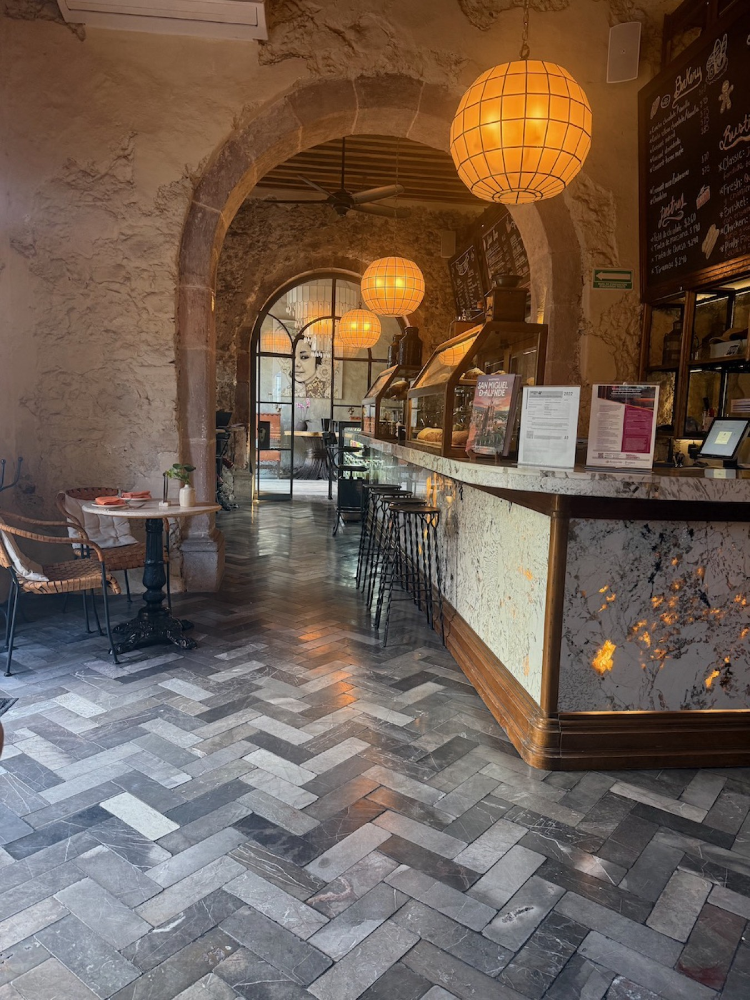
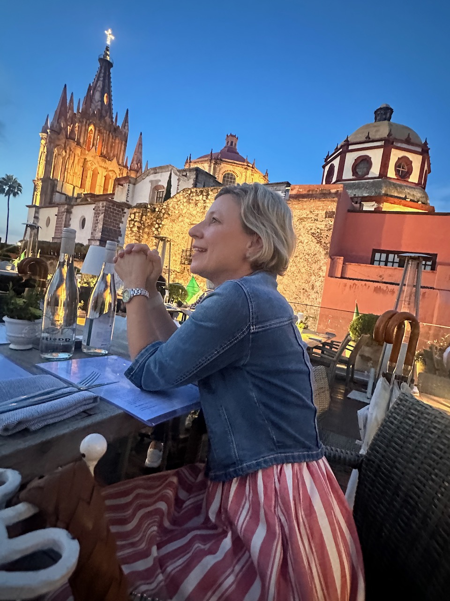
Until next time
I'm already looking forward to going back. San Miguel de Allende is genuinely perfect for a long weekend, and I'd especially recommend this time of year — you escape the Austin heat and dodge the crowds. The two things we missed were the hot springs just outside town and the Chapel of Jimmy Ray gallery — both officially first on the list for next time.
If you've been putting off a trip like this: don't. Sometimes the seamless-sounding-but-actually-simple adventure is exactly the one worth taking.